VUW Course Selection
2023Design Strategy · Systems Thinking · Information Architecture · Figma Prototype
The Victoria University of Wellington course selection and enrolments process is scattered, uninformative, time-consuming, inflexible, and fundamentally a distressing process for students to navigate. This project examined structural friction within the university's course selection ecosystem — identifying breakdowns in discoverability, information hierarchy, and user mental models — and proposed a revolutionary personalised recommendation system powered by a genetic algorithm.
A System That Works Against Its Users
VUW's course selection process is scattered across siloed systems with no connective tissue. Course information, discoverability, guidance, interrelationships, and application each exist in separate locations — forcing students to become their own archive, organiser, timetable, and counsellor. No information is saved, no recommendations are offered, and no state persists between sessions.
The information architecture reveals critical clashes between user mental models and system structure. Students fundamentally "don't even know what website the enrolment process happens on." There is a consistent pattern of mismatching information between pages — course descriptions are vague, the search function is buried, and students are forced to refer to physical handouts given on campus or use tools that feel like "some ancient portal from 2010."
For international students, these barriers compound: applying from a foreign country, speaking a foreign language, navigating unfamiliar university tools over mobile as they cannot access a campus computer. If the system fails the outlier, it fails everyone.
"The student must act as the archive, organiser, timetable, and counsellor."Research Finding — VUW Course Selection
Research Methods
- Stakeholder Analysis
- Information Architecture Audit
- Mental Model Mapping
- Semi-Structured Interviews
- Affinity Mapping
- Literature Review
- Heuristic Evaluation
- Competitive Analysis
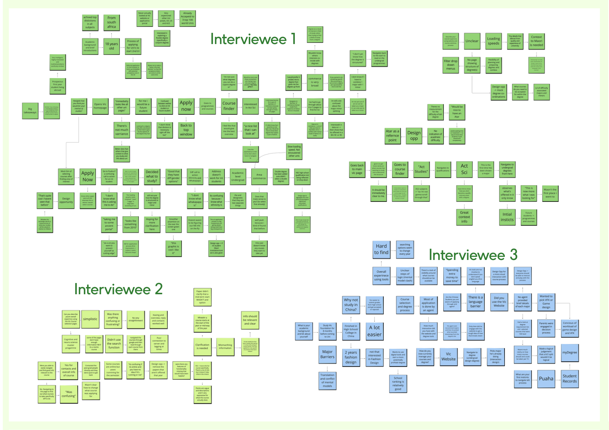
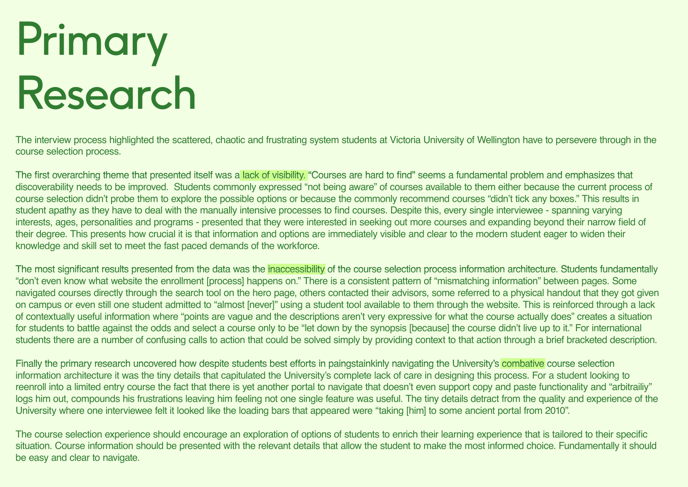
Designing for the Outlier
The chosen stakeholder is a first-year international student who needs to use the university website as their primary portal for navigating potential degrees, current interests, and course requirements. They are unfamiliar with university tools and portals, currently still in high school, applying from a foreign country, speaking a foreign language, and using the university tools over mobile as they cannot access a campus computer.
By designing for this outlier — the user facing every compounded barrier simultaneously — the system necessarily works for everyone. The design values that emerged were clear: output-driven and focused, tangible, timeless. If the design should reflect any value, it should be output-driven — moving the student from nothing selected to a clear, confident course structure.
VUW Course Selection — Systems Analysis
The systems-level analysis document examining five breakdowns in VUW's course selection ecosystem — course information, discoverability, guidance, interrelationships, and application — with stakeholder definition and design values.
A Revolutionary Course Selection System
The redesigned system introduces a personalised recommendation engine powered by a genetic algorithm on the backend. By mapping the data points students put into their degree dashboard and profile over time, the system creates a dynamic, fluid design that grows with the student — taking away barriers for international and new students, and giving returning students a valuable toolset to build and synthesise courses with an eye for what VUW can provide them.
Inspired by ANU's lineage tree design and visual interactive hybrid recommender systems (Bostandjiev et al., 2012), the prototype introduces gamified selection where students visually manipulate their inputs using a swiping interaction — flipping the paradigm from browsing everything to guided, interest-driven discovery. The design uses a graphically balanced display that centralises the information hierarchy, making it easy for students from different backgrounds to navigate.
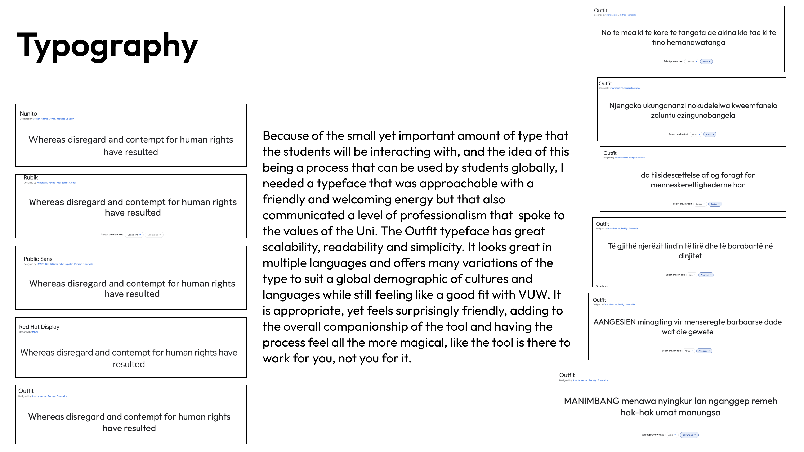
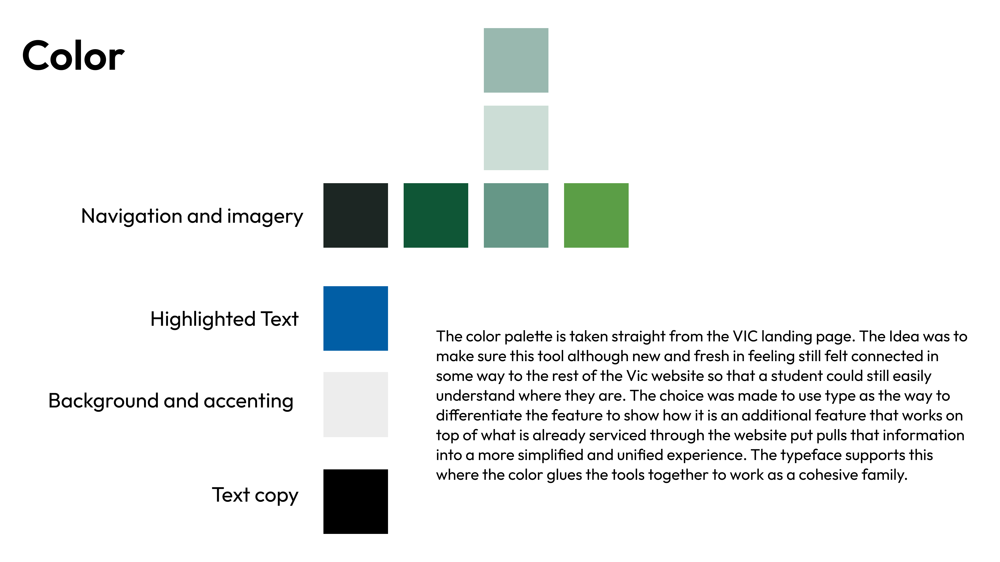
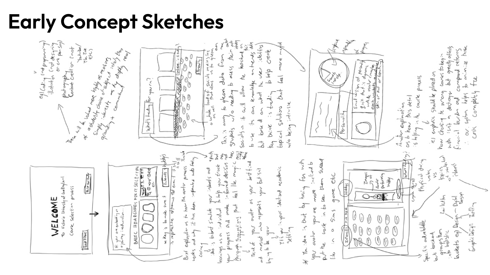
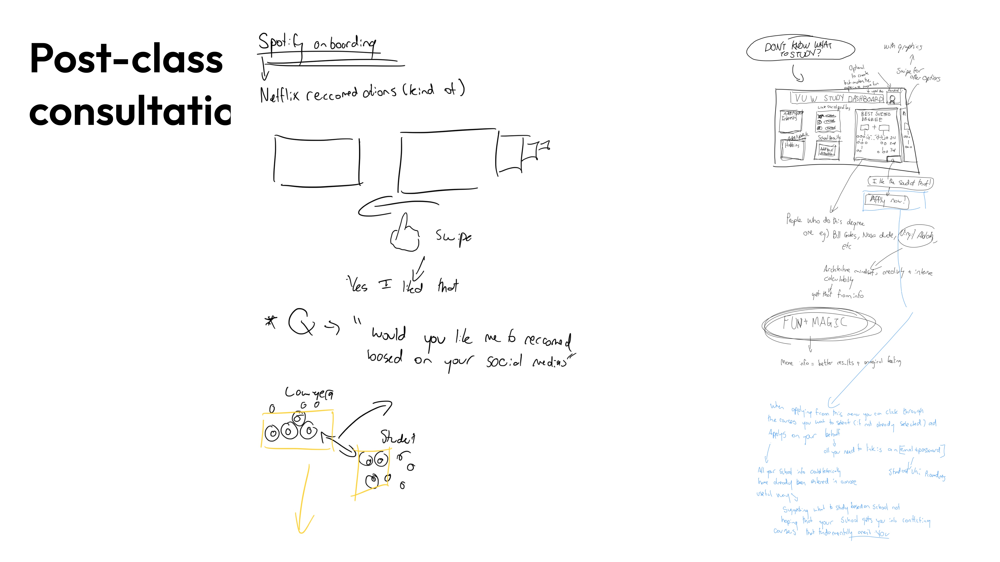
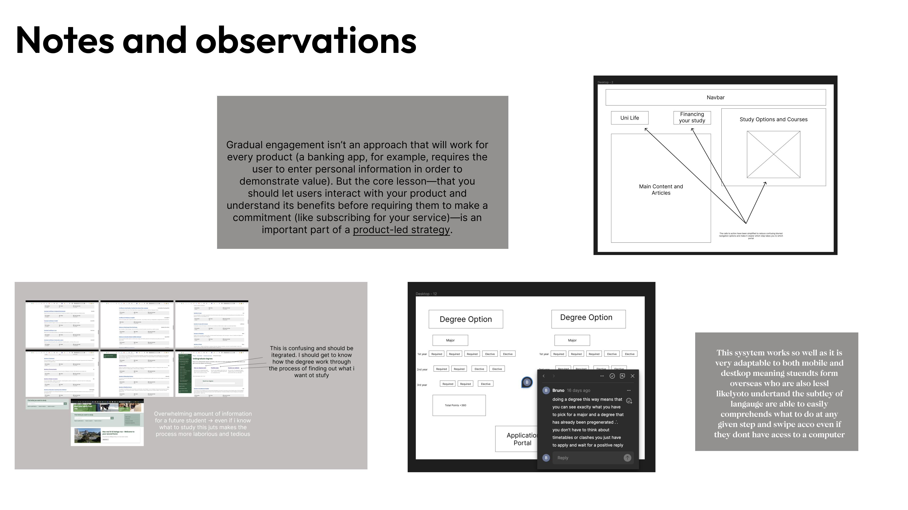
Iterative Validation
Through an iterative approach of interviewing 10 different students at varying stages of the prototyping process, the design pivoted from tailoring the student to the university system toward synthesising the university's scattered information into a seamless experience. This inverse relationship — allowing the student to filter the university to tailor their education experience — emerged directly from user feedback.
Wireframe feedback sessions with 4 participants acting as the defined user persona surfaced critical insights: calls to action needed prominence, the degree dashboard hierarchy required restructuring, and the gamified swipe interaction for course discovery resonated strongly but needed clearer mental model framing.
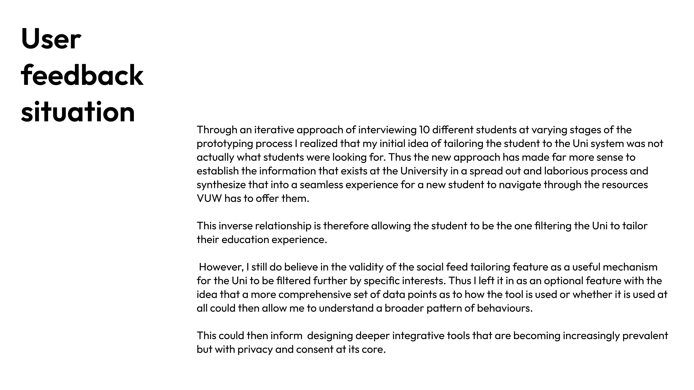
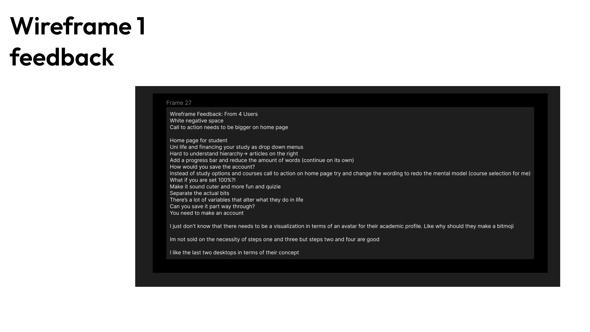
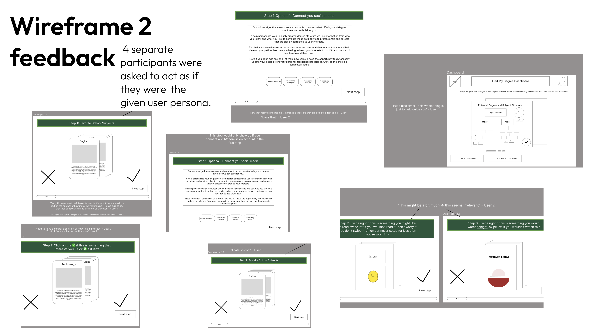
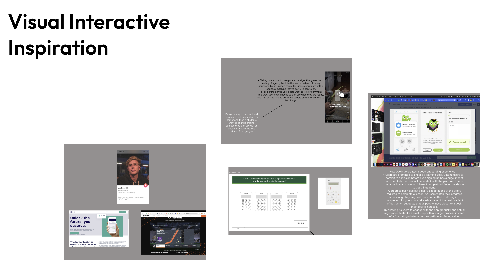
Blending Personality with Education
The final high-fidelity Figma prototype demonstrates the complete interaction model — from initial interest declaration through gamified course swiping to degree dashboard and enrolment confirmation. The genetic algorithm backend maps student inputs to personalised degree structures that grow and adapt over time.
The outcome flips the entire approach to course selection on its head: the student, not the university, is at the centre. By incorporating a genetic algorithm and mapping student data points into their degree dashboard, the system creates a dynamic and fluid design that takes away large barriers for international and new students while giving returning students a valuable toolset. The result is an iconic interaction design that blends student personality with education — a tailored experience delivering real-world value to all stakeholders.
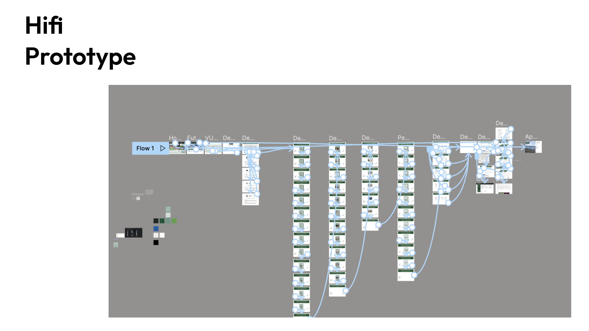
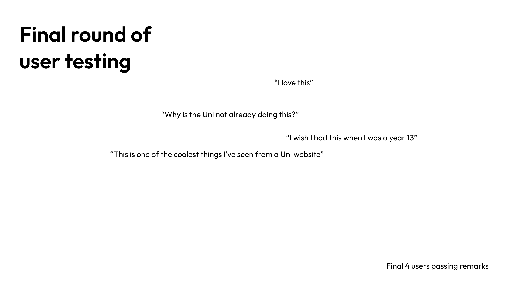
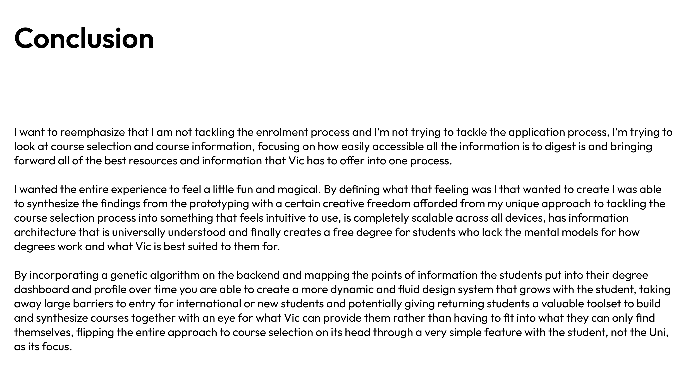